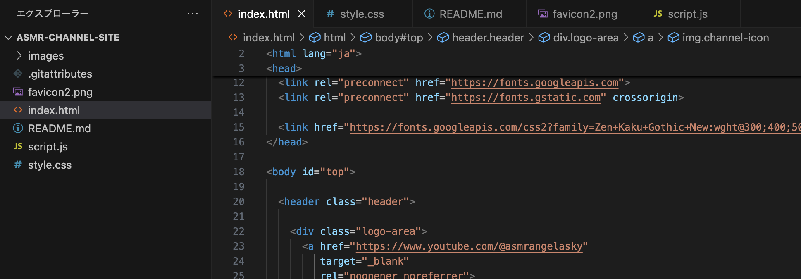
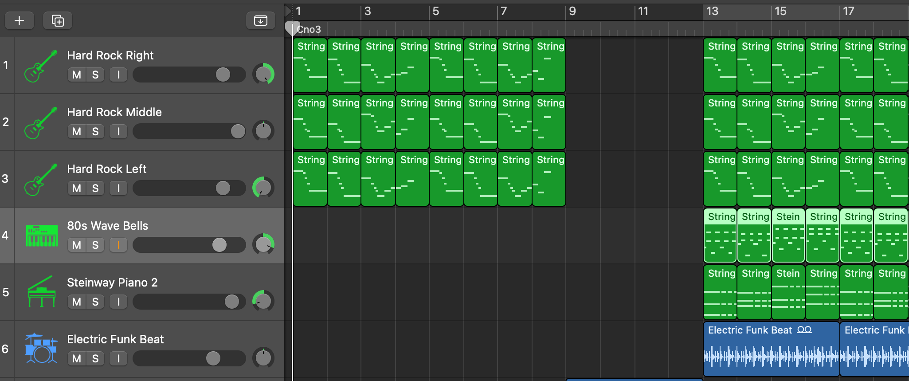
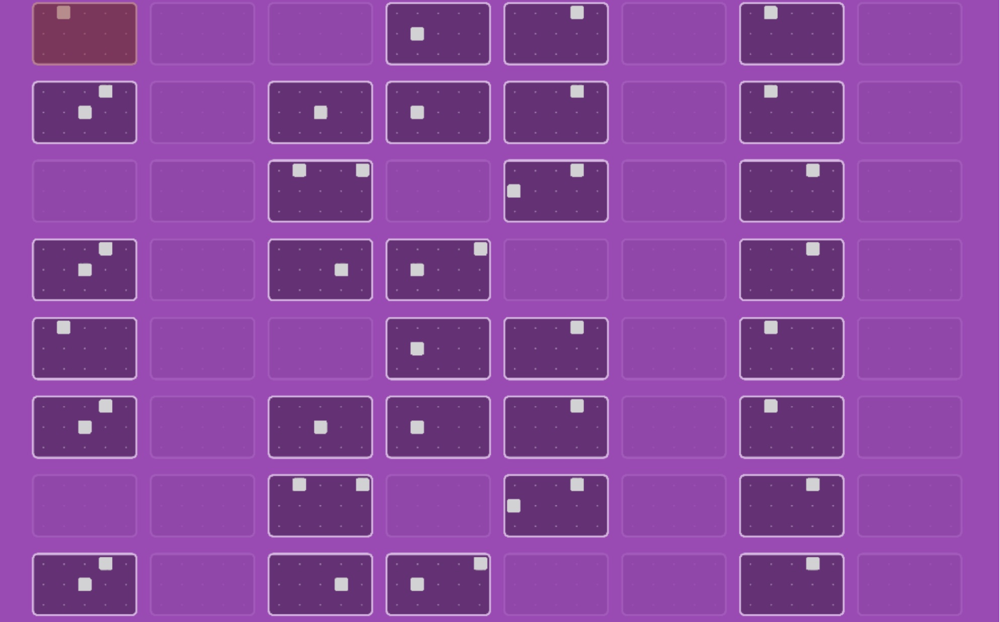
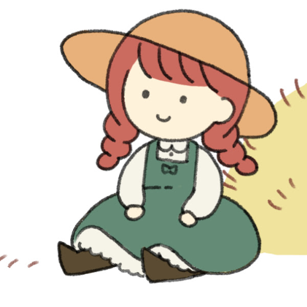
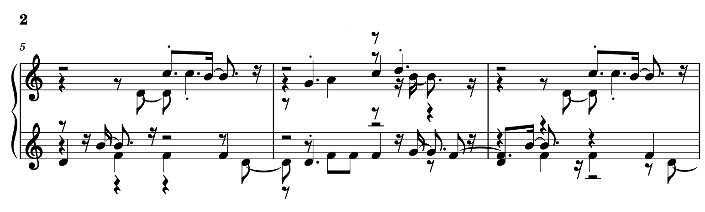

Angela
世界観と構造のアーカイブ
静かな表現と、少し不思議な体験をテーマに制作しています。
About
思考と制作
音、世界観、構造設計に強く惹かれ、 ASMR・Web制作・楽譜制作などを中心に活動しています。
「なぜ違和感を覚えるのか」 「どうすればもっと自然に伝わるのか」 を考えながら、 自分なりの表現を組み立てています。
静かな空気感や、 少し不思議で安心できる世界観が好きです。
Works
創作アーカイブ

ASMR / Sound Design
ASMR Angela Sky
静かなロールプレイと 選択式ストーリーを中心にしたASMR制作。
2025 / 🎧ASMR / YouTube
📄 View Archive →





Manual
特性とスタイル
制作特性カード
Observation
観察
違和感や細かな変化を観察する。
Structure
構造化
情報や世界観を整理・構造化する。
Deep Dive
深掘り
興味を持った分野を深く掘り下げる。
Atmosphere
世界観
空気感や没入感を重視する。
Synchronization
同期設計
音・映像・流れの同期表現。
Optimization
最適化
「もっと自然にできないか」考え続ける。
制作特性グラフ
Observation
Structure
Deep Dive
Atmosphere
Synchronization
Optimization
制作プロセス
01
違和感を見つける
02
原因を調べる
03
整理する
04
世界観として組み込む
05
音・映像・流れを合わせる
06
もっと自然にできないか調整する